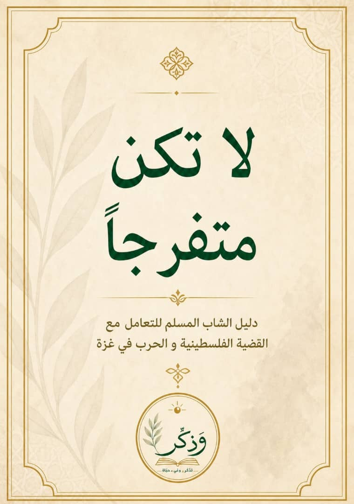

Don't just stand by and watch.
A young Muslim's guide to navigating the Palestinian cause and the war in Gaza.
- Book Introduction: Before You Start
- Chapter One: This Is Not a Normal Cause
- Chapter Two: What Does It Mean to Stand With Palestine?
- Chapter Three: Support Is Not Just a Feeling
- Chapter Four: Real Ways to Support
- Chapter Five: What Is Not Being Asked of You?
- Chapter Six: When the Cause Turns Into Showing Off
- Chapter Seven: The Cause Is Right, But Do Not Support It With Wrong
- Chapter Eight: Do Not Be Cold, and Do Not Burn Yourself Out
- Chapter Nine: What Does This Do to You Mentally?
- Chapter Ten: Your Real Role as an Arab Muslim
- Chapter Eleven: Palestine Is Not an Event. It Is a Long Cause
- Chapter Twelve: What Will You Do After This Booklet?
Introduction
This booklet is not a political study. It is not a military analysis. And it is not trying to explain every detail of the Palestinian cause. This booklet is a message to your heart.
It is written for the young Muslim who sees Gaza in pain, who has heard about Palestine since childhood, but sometimes still does not know what to do. Is it enough to feel sad? Is it enough to post? Do you have to speak about everything? Are you falling short if you do not know every detail? And how do you support the cause without lying, wronging others, or burning yourself out from the inside?
These pages are not asking you to become an imaginary hero. They are not asking you to carry more than you can handle. And they are not asking you to suddenly become a scholar, analyst, or major activist. They are asking for something clearer and more honest: do not be just a spectator.
Know that Palestine is not just a passing headline. Gaza is not a sad scene that appears on your screen and then ends. And Al-Aqsa Mosque is not some distant detail that has nothing to do with a Muslim's heart.
Here, you will read about what it means to take a position. You will read about support that is more than a feeling, about real doors of action, about the mistakes of anger and showing off, and about the balance between a heart that is alive and a heart that is burned out. You will also read about your real role as an Arab Muslim.
You may not leave this booklet knowing everything. That is not the goal. But maybe you will leave knowing one important thing: which door can you support from? If you cannot do a lot, do not leave the little. If one door is closed to you, open another one. And if you get tired, rest so you can continue, not so you can forget.
Read these pages calmly. Do not read them like someone chasing a quick emotion. Read them like someone looking for his duty. The cause is long, and the road needs honest hearts.
And Allah is the One we ask for help.